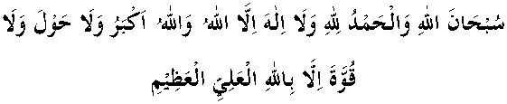

“Remember Your Lord a lot, and praise Him in the early hours of the night and morning.”
“The seven heavens and earths, and all that is therein, praise Him.”
“And there is not a thing but it recites His praise, but you cannot understand their praise.”
“Glorified be Allah, the Lord of the worlds.”
“So, glory be to Allah when you enter the night and when you enter the morning. Unto Him be praise in heavens and Earth, and when the sun sets and at noonday.”
“And the angels recite the praises of their Lord and ask forgiveness for those on the Earth.”
“Praise the name of Your Lord, the most High.”
“Then recite the praise of Your Lord and seek forgiveness of Him. Lo! He is ever ready to show mercy.
“Praise be to Allah, Lord of the worlds.”
“Praise be to Allah, Who has created the Heavens and Earth, and has created darkness and light. Yet those who disbelieve join partners with Allah.”
“And they say, all praise be to Allah Who has guided us to this. We could not have truly been guided if Allah had not guided us.”